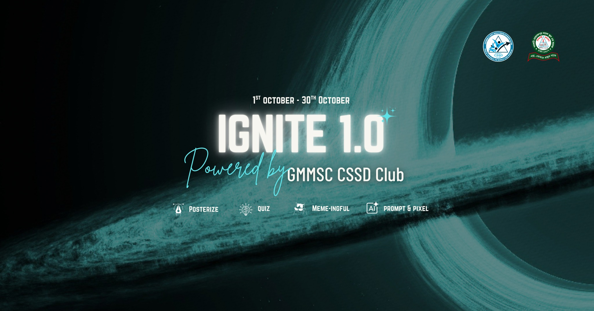
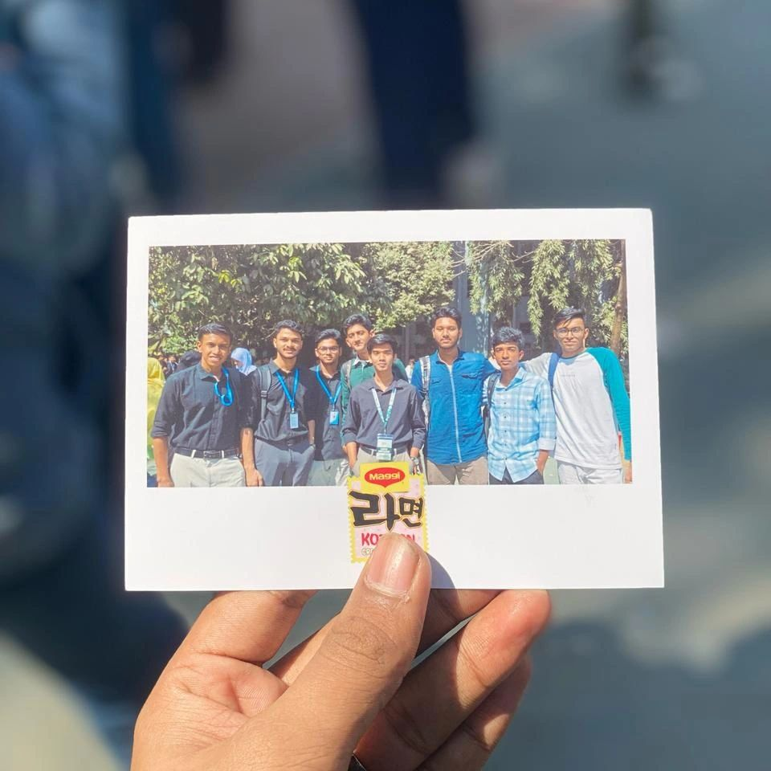
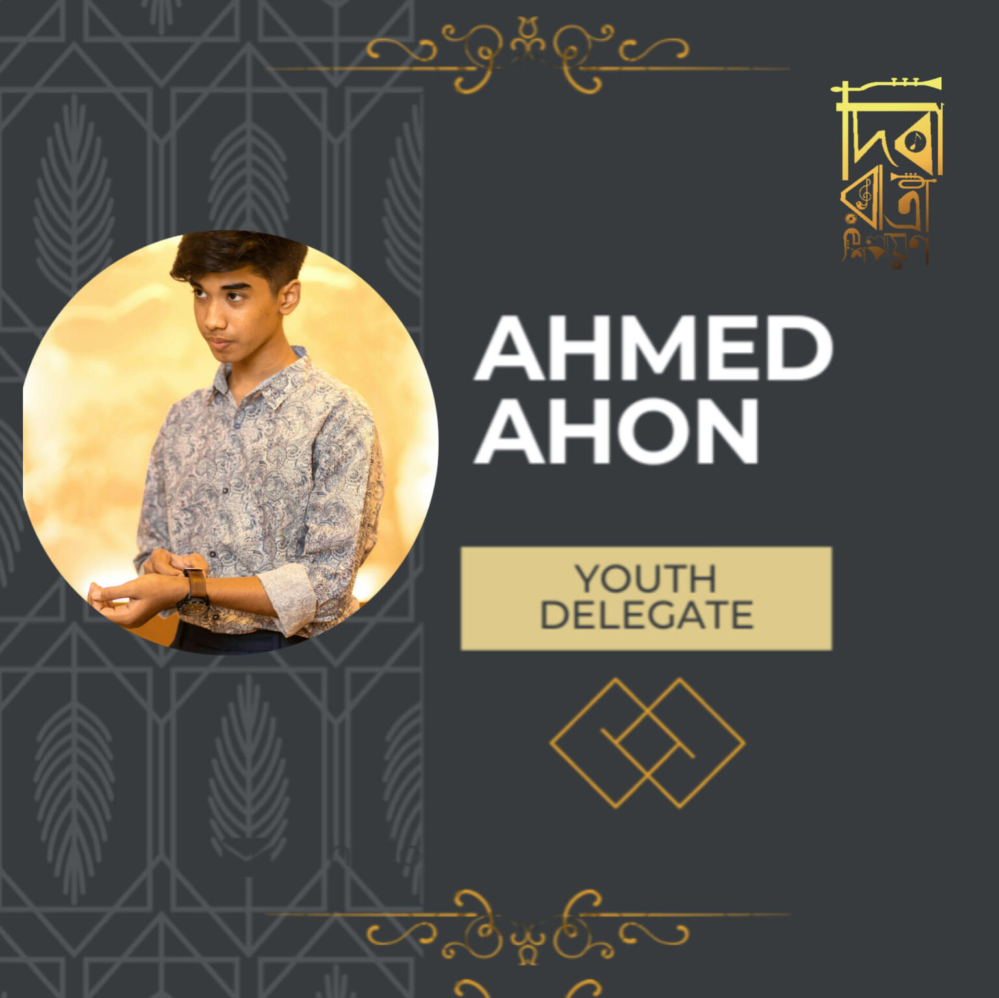

Leading with clarity, building with purpose.
Founder of AfterTech , a tech media platform delivering reliable and engaging tech news with a growing audience of 5K+ followers. Vice President of CSSD, organizing three flagship events and 8+ workshops featuring national and international professionals, creating impactful learning experiences for students.
Experienced in designing for international clients and driving digital engagement.

The roles that shaped me
What I bring to the table
Leadership
Guiding teams, driving missions, high-impact decisions.
Graphic Design
Crafting bold visuals that communicate and captivate.
Web Development
Minimalist web design and complex WordPress builds.
Work I'm proud of




Validated expertise


Let's build something together
Open to collaborations, partnerships, and conversations.